MailDev – User Guide
For developers, project owners/PMs, members, admins and auditors. A mail catcher for the company's development and test environments: applications send mail here instead of to real recipients.
Updated 2026-10-29
1. Background
Why this system exists
Applications under development still have to send e-mail (sign-up confirmations, password resets, invoices, notifications). Many projects had the company's real SMTP server in their code or dev config. When test data is copied from production, recipients are real customers: one batch run or one wrong click sends test mail out of the company, unnoticed and untraceable.
- Customer data exposure and reputational risk.
- No record of who sent what, from where, when.
- Personal mail catchers (MailDev, Mailpit on a laptop) cannot be shared with QA or PMs; a shared one lets every project see every other project's mail.
- Customers want to see their project's test mail but have no AD account.
MailDev addresses exactly this: one isolated area per project, applications point SMTP/API at it, every message is kept for inspection and never leaves unless an owner approves a relay. Every action is audited.
2. What the system does
Capture per project
Apps send over SMTP (25, 587 STARTTLS, 465 TLS) or provider-compatible APIs: SendGrid, AWS SES, Azure Communication Services, Microsoft Graph, Gmail. The credential selects the project; recipients are irrelevant.
Read anywhere
Outlook-like web UI, or add the mailbox to Outlook/Thunderbird/Apple Mail over IMAP (143/993) and POP3 (110/995).
No leaks
Mail is never delivered to real recipients. Relay only works when an admin enables it and an owner approves each message.
Isolation and roles
AD login. You only see projects you belong to. Owners manage members, members read. Customers get separate external accounts.
Data protection
Mail encrypted at rest with a per-project key (OpenBao). Auto-deleted after 14 days. S/MIME signatures verified against the company PKI.
Full audit
Every web/SMTP/IMAP/POP3/API login, every captured message, every action and relay decision, with IP, time and protocol.
Concepts
| Concept | Meaning |
|---|---|
| Project | An isolated mailbox with a slug (e.g. erp-stg), its own credentials, members and retention. |
| Credentials | The project's connection details: SMTP/IMAP/POP3 login, API key, SES-style key pair. Owners can re-initialize (rotate) them. |
| Owner | PM or team lead. Manages members, rotates credentials, approves relay, reads the project audit log. A project can have several owners. |
| Member | Developers, QA. Read the inbox and development info, delete mail, request relay. |
| Admin | System administrator: create/archive/delete projects, assign owners, manage users, retention, relay targets, read all logs. |
| Auditor | Read-only: sees every project and the whole audit log, changes nothing. |
| External account | Local (non-AD) account created by an admin for a customer. Member only, never in the demo project. |
| Demo project | Shared sandbox: every AD user is a member, admins are owners. Do not send sensitive data there. |
3. Signing in
Open https://maildev.example.com and sign in with your Active Directory account (username without @example.com). External users use the username/password an admin gave them and must change the password at first login.
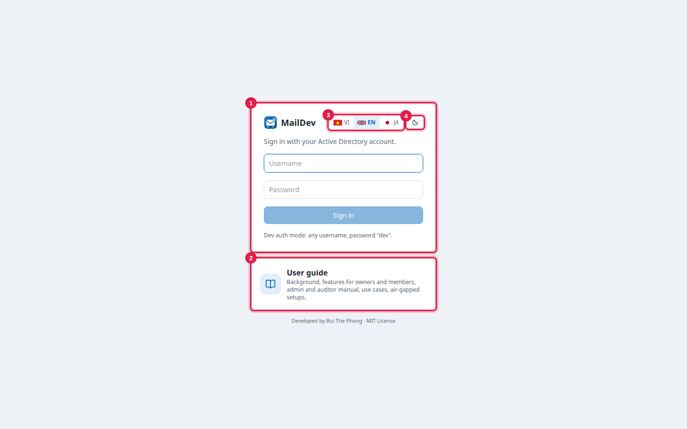
- External accounts are locked for 15 minutes after 5 wrong passwords; an admin can unlock earlier.
- Language and theme are remembered per browser.
- Sessions last 12 hours and extend while in use.
4. Home
The left column lists the projects you belong to. Hover (or click) a project and the right column shows the branches: Development info, Inbox, and for owners/admins Relay queue and Manage project.
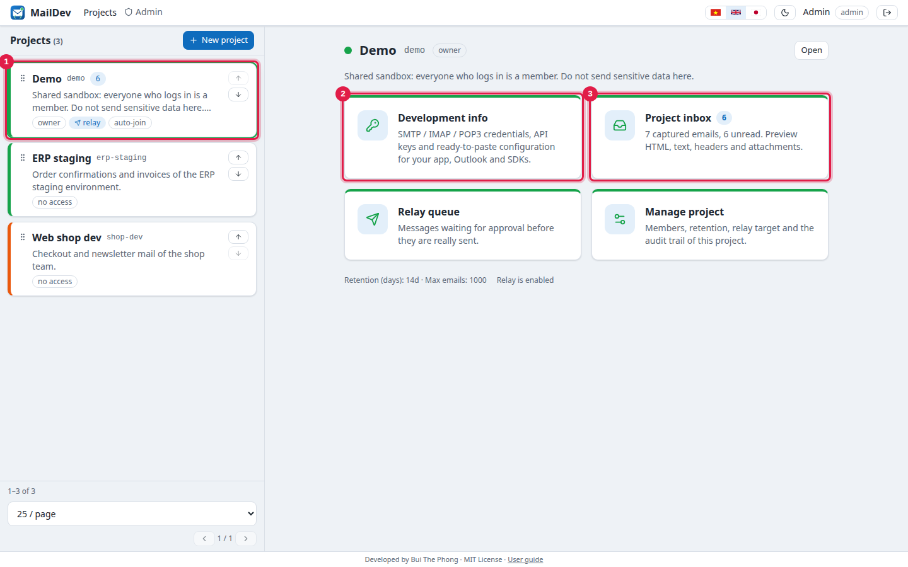
- Each card has a fixed color per project, reused in the project navigation bar.
- Arrows or drag-and-drop reorder the list; the order is remembered in your browser.
- Owners/admins click the pencil to edit the description in place.
- The blue badge is the unread count.
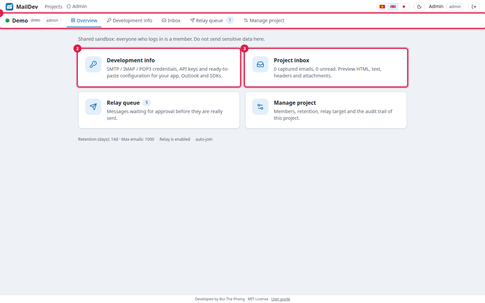
5. Development info (for developers)
Credentials and ready-to-paste configuration. Credentials are shown in plain text because they are development-only; never use them to send real mail.
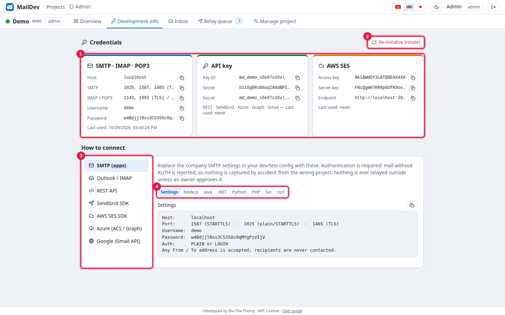
Hosts and ports
| Service | Host | Ports | Notes |
|---|---|---|---|
| SMTP | smtp.maildev.example.com | 25 (plain/STARTTLS), 587 (STARTTLS), 465 (TLS) | AUTH PLAIN or LOGIN required; unauthenticated mail is rejected. |
| IMAP | smtp.maildev.example.com | 143 (STARTTLS), 993 (TLS) | One INBOX per project. |
| POP3 | smtp.maildev.example.com | 110 (STLS), 995 (TLS) | Deleting in the client deletes from the project. |
| Web and API | maildev.example.com | 443 | The only port exposed to the internet. |
Configure an application over SMTP
The SMTP (apps) tab has snippets for Node.js (nodemailer), Spring Boot, Laravel/PHP, Django, .NET, Go, Java (jakarta.mail) and a swaks test command. Only host, port, username and password change; keep your real From/To addresses.
Host: smtp.maildev.example.com Port: 587 (STARTTLS) or 25 / 465 Username: <project slug> Password: <project SMTP password>
Provider SDKs (no code change)
- SendGrid: keep the SDK, set the host to
https://maildev.example.com/sendgridand use the project API key. - AWS SES (v1 and v2): endpoint
https://maildev.example.com/seswith the SES-style keys of the project. - Azure Communication Services Email: connection string
endpoint=https://maildev.example.com/azure/<key id>;accesskey=<base64(secret)>; the SDK signs with HMAC as usual. - Microsoft Graph sendMail: base URL
https://maildev.example.com/graph/<key id>/v1.0, bearer = API key. - Gmail API: root URL
https://maildev.example.com/gmail/<key id>, bearer = API key. - Generic REST:
POST /api/v1/sendwith JSON or raw RFC 822.
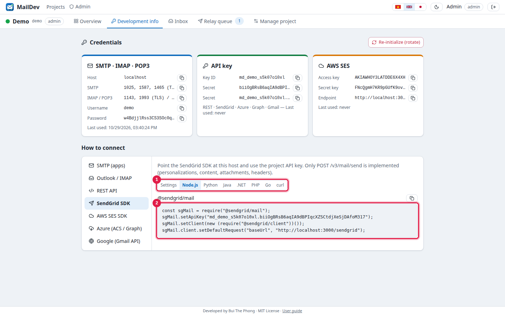
Reading mail in Outlook
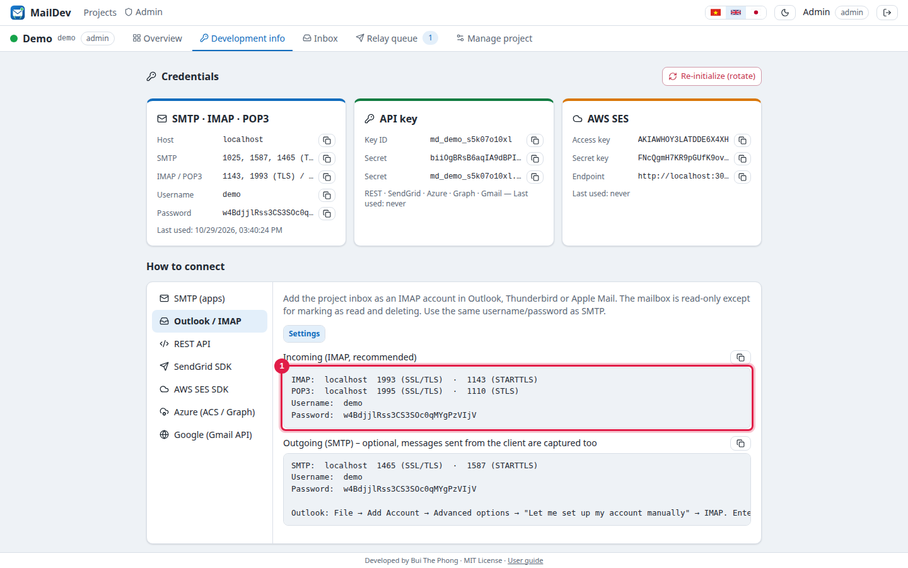
- Outlook: File → Add Account → Advanced options → “Let me set up my account manually” → IMAP.
- Email address: anything, e.g.
<slug>@maildev.local(a label only). - Incoming: smtp.maildev.example.com, 993, SSL/TLS. Outgoing: smtp.maildev.example.com, 465 SSL/TLS (or 587 STARTTLS).
- Username/password: the project's SMTP credential.
6. Inbox
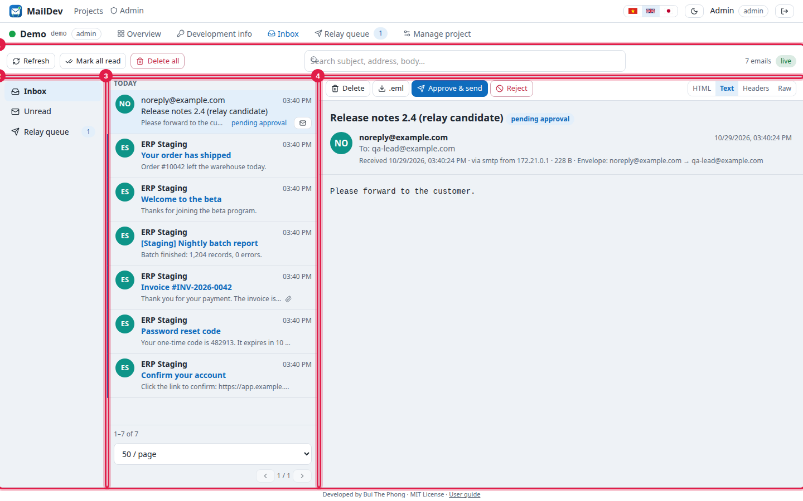
- Search by subject, address (including the part before @) and text body. For encrypted mail, body search is unavailable; subject and address search still work.
- ↑/↓ or j/k move between messages. Hover a message to toggle read/unread.
- Reading pane: HTML / Text / Headers / Raw; HTML mode has phone, tablet and desktop widths for responsive checks.
- Remote images are blocked by default (no tracking pixels). Click the image icon to load them.
- Attachments appear as chips under the header; click to download. Download
.emlto open in a mail client. - S/MIME messages show a badge: valid (signer), invalid (reason) or encrypted.
- Pages of 25/50/100; new mail appears instantly ('live' badge).
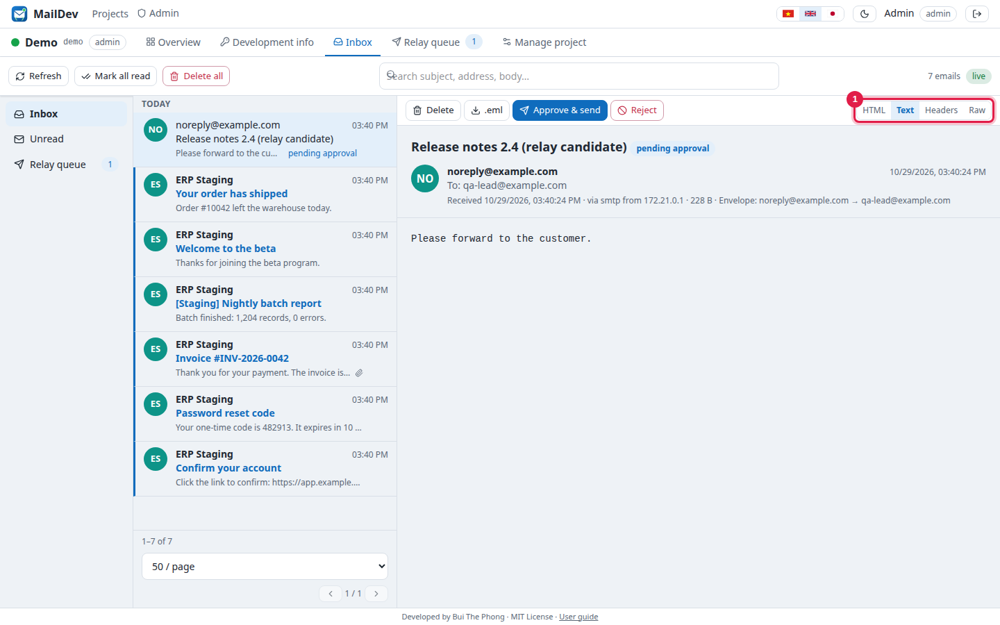
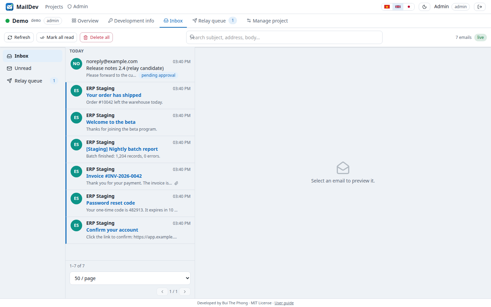
7. Common use cases
Developer running the app locally or on staging
- An owner creates the project (or asks an admin) and initializes credentials.
- The developer pastes the SMTP (or SDK) configuration into the dev/staging config.
- Trigger the mail feature as usual; open the inbox to inspect the result and check HTML at different widths.
QA testing an e-mail confirmation flow
QA opens the project inbox on the web or in Outlook and takes the confirmation link/OTP from the mail. No real mailbox needed.
Automated (E2E) tests
GET /api/projects/<id>/emails?q=verification # search GET /api/projects/<id>/emails/<eid> # body, attachments GET /api/projects/<id>/events # Server-Sent Events: wait for new mail # authenticate with the user's session cookie (POST /api/auth/login)
Really sending an approved message (relay)
- An admin configures the project's relay target (company SMTP, SES, SendGrid) and enables relay.
- From then on every captured message waits in the relay queue.
- An owner opens the queue, selects one or many messages, approves (really sends) or rejects, with a note.
- Recipients outside the allow-list are blocked. Every decision is audited.
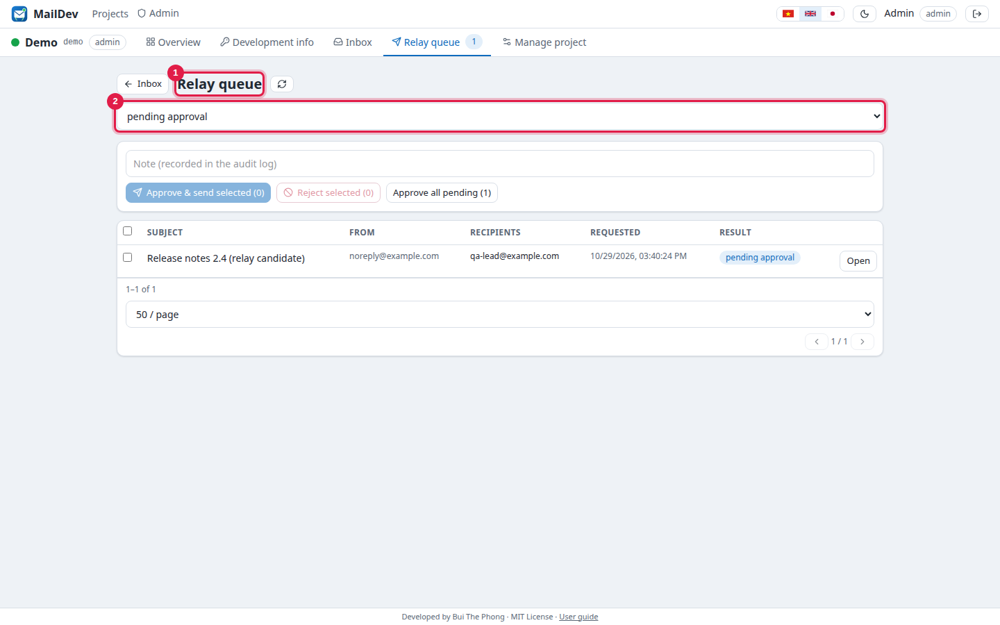
A customer reviewing their project's test mail
An admin creates an external account, an owner adds it to the project as member. The customer signs in over the internet (443 only), sees only that project, not the demo, and has no management rights.
S/MIME mail
Mail signed with certificates issued by the OpenBao PKI (OpenBao) shows 'Signed by … ✓'. Encrypted mail is stored untouched so Outlook can decrypt it with the user's certificate; the web shows a label only.
8. Guide for Owners / PMs
Owners have every member right plus Manage project with four tabs.
Members
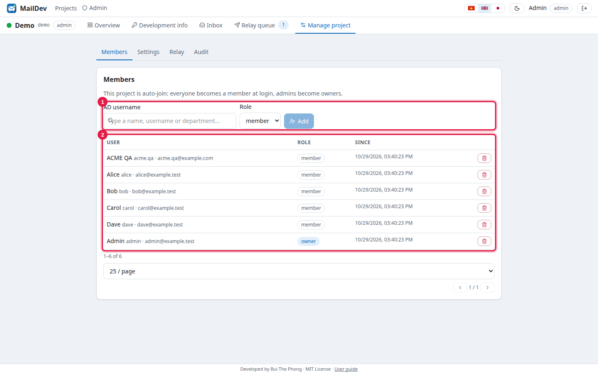
- Only people in the company directory (AD) or existing external accounts can be added; unknown names are rejected.
- External accounts can only be members.
- People who never signed in can be added; access applies at their first login.
Settings
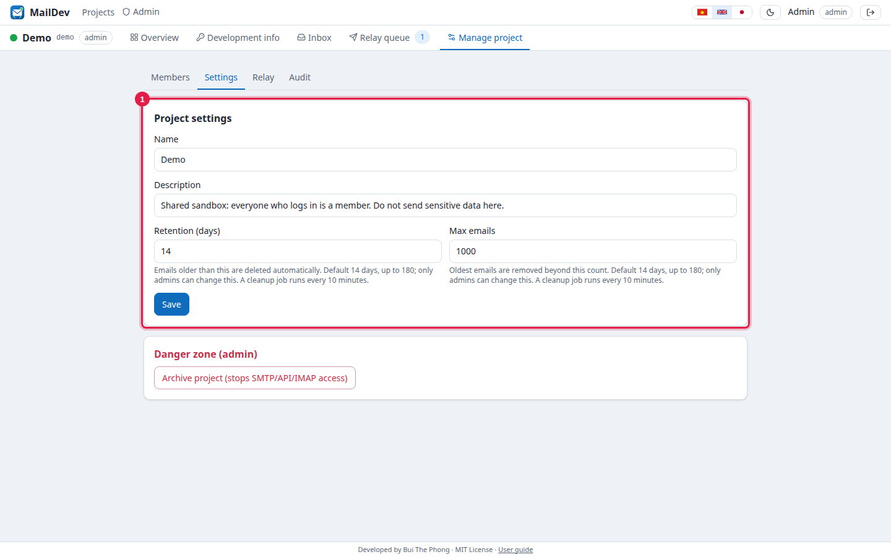
Relay
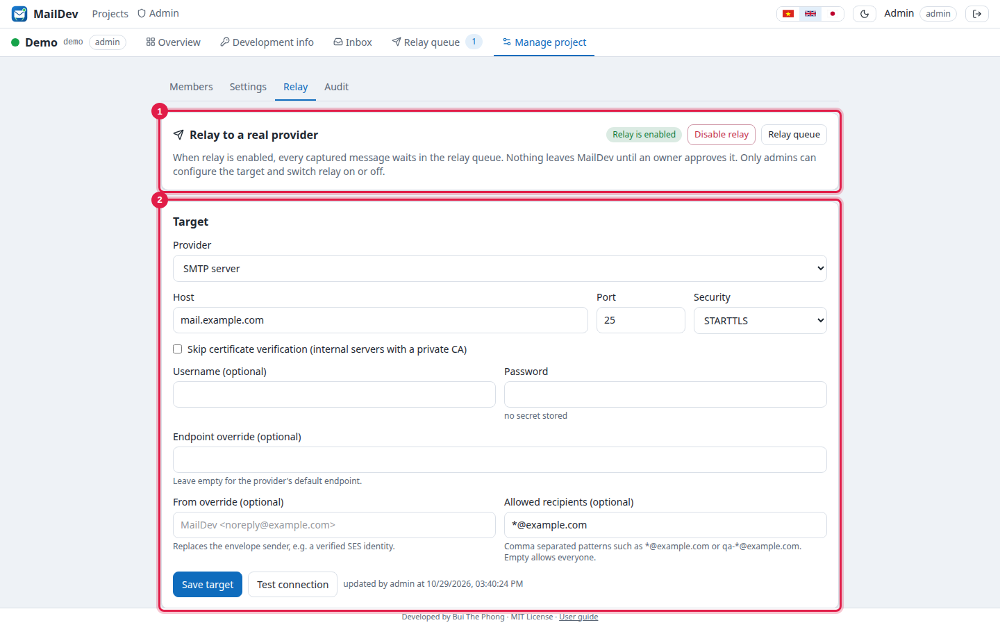
Project audit log
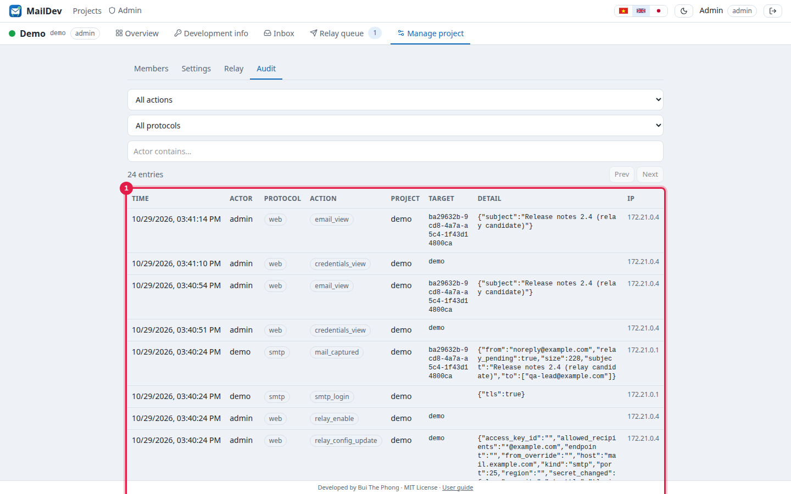
Re-initializing credentials
9. Guide for Members
- Open Development info for credentials and configuration snippets.
- Read, search and delete mail in the inbox; mark as read.
- Add the project mailbox to Outlook over IMAP.
- When relay is enabled you may re-request relay of a failed or rejected message; you cannot approve.
- Members cannot change members, settings or credentials.
10. Guide for ADMINS
The Admin menu has three tabs: Projects, Users, Logs. Each has search, sortable columns, filters and pagination.
Projects
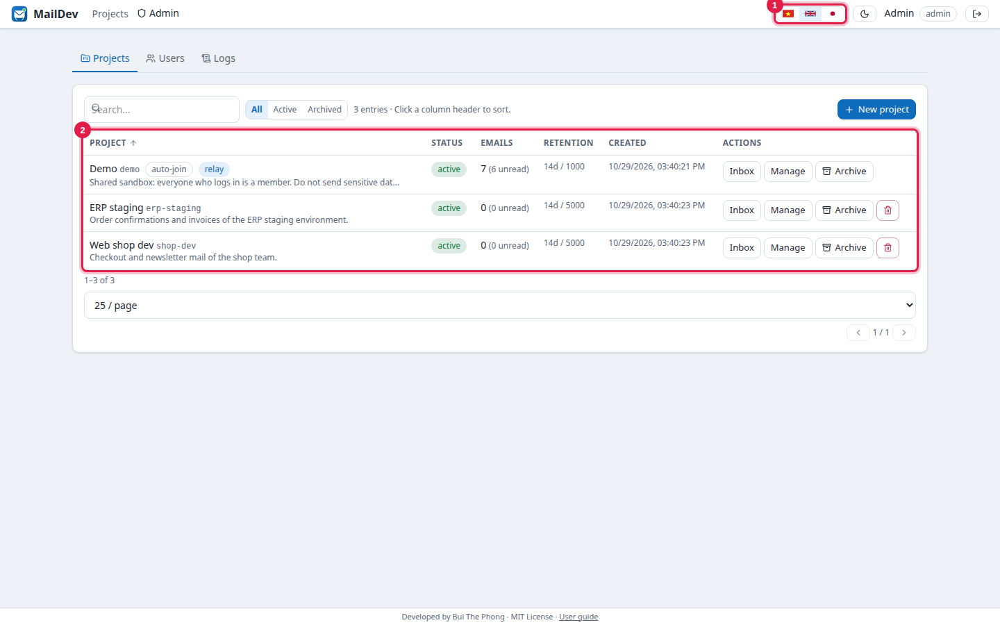
- New project: slug (lowercase, digits, dashes; also the SMTP username), name, owner (AD username), description. Credentials are generated immediately.
- Archive: credentials stop authenticating (SMTP/IMAP/POP3/API), the inbox becomes read-only, no rotation, no relay decisions, and the project is exempt from cleanup. Reactivate restores everything.
- Delete: permanently removes the project and all mail; its OpenBao encryption key is destroyed (backups become unreadable). The demo project cannot be deleted.
- Retention: default 14 days, admins set 1–180 days and a max message count; the cleanup job runs every 10 minutes and logs
retention_cleanup.
Users
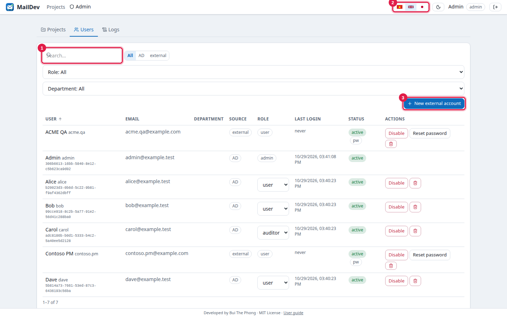
- The whole staff list is imported automatically from the company directory (directory.example.com/users) every 15 minutes, with department. People who never signed in show 'never'.
- Roles can only be changed for AD accounts: admin, auditor, user. You cannot demote yourself.
- External accounts: created with a temporary password (shown once), forced change at login; reset password, unlock, disable, delete. Never admin/auditor, never in the demo.
- Username reuse: when an employee leaves, AD deletes the account; a new hire with the same username has a different objectGUID. At the newcomer's first login the account is reset: role user, all memberships removed, demo only, logged as
user_identity_reset. - Disabling a user ends all their sessions.
Logs
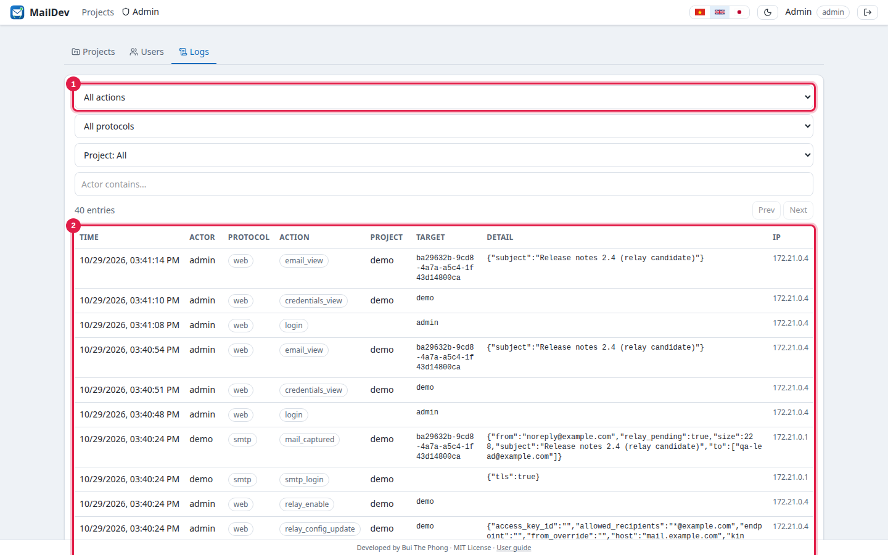
| Action group | Examples |
|---|---|
| Logins | login, login_failed, smtp_login, smtp_login_failed, imap_login, pop3_login, api_auth_failed (with IP, TLS) |
| Projects / members | project_create, project_update, project_delete, member_add, member_invite, member_remove |
| Credentials | credentials_init, credentials_reinit, credentials_view |
| mail_captured (per message, source protocol), email_view, email_download, attachment_download, email_delete, inbox_clear | |
| Relay | relay_enable, relay_disable, relay_config_update, relay_test, relay_request, relay_approve, relay_sent, relay_failed, relay_reject |
| Users | user_role_change, user_disabled_change, local_user_create, password_change, password_reset, user_unlock, user_delete, user_identity_reset |
| System | retention_cleanup |
Configuring a relay target
- Open the project → Manage project → Relay tab.
- Choose the kind: SMTP server (host, port, None/STARTTLS/TLS, optional skip of certificate verification for internal servers, account), AWS SES (region, access key, secret), SendGrid (API key). An endpoint override is available.
- Optional: sender override (e.g. a verified SES identity), recipient allow-list (
*@example.com, qa-*@example.com). - Save, click Test connection (SMTP), then Enable relay. New mail now waits for owner approval.
*@example.com.Operations
- Source: GitHub
phongbui83/maildev. Deployed with kustomize from the deploy repo, namespacemaildev. - Data: external PostgreSQL; mail, bodies and attachments encrypted with per-project keys wrapped by OpenBao Transit. Keep the master key and the OpenBao AppRole safe.
- TLS certificates from cert-manager (Let's Encrypt) for maildev.example.com and smtp.maildev.example.com; LDAPS to AD is certificate-pinned (re-run
make secretswhen AD renews). - Application logs are JSON in the
maildev-apipod.
11. Guide for AUDITORS
Auditor is an independent read-only role for internal audit or security.
- Sees every project: overview, development info, inbox (read-only), members, relay configuration (no secrets), project log.
- Logs tab: the whole system log, filterable by project, action, protocol, actor, paginated.
- Cannot delete mail, approve relay, change members or create projects.
- Typical questions: who downloaded mail X? (
email_download); which hosts logged into project Y over SMTP this week? (smtp_login+ project filter); which mail really went out? (relay_sentwith approver and recipients); which accounts were identity-reset? (user_identity_reset).
12. Security and data
| Control | Implementation |
|---|---|
| Authentication | AD over LDAPS keyed by objectGUID; external accounts with argon2id hashes, lockout after 5 failures, forced password change. |
| Authorization | Global admin / auditor / user; per-project owner / member; non-members get 404. |
| Encryption at rest | One data key per project wrapped by its own OpenBao Transit key; raw, bodies and attachments AES-GCM; deleting a project destroys the key. |
| Transport | Let's Encrypt TLS for SMTP/IMAP/POP3/HTTPS; project credentials AES-GCM encrypted with a master key. |
| Safe rendering | Sanitized HTML in a sandboxed iframe with a CSP blocking remote resources; HTML/SVG attachments forced to download. |
| S/MIME | Signatures verified against the OpenBao PKI chain (OpenBao pki-int/pki-root) plus public roots; never decrypted. |
| Retention | 14 days by default, max 180, cleanup every 10 minutes, archived projects exempt. |
| Audit | Every action, every protocol, with IP; independent auditor role. |
13. Air-gapped environments
Some projects run in isolated networks without access to maildev.example.com, AD, OpenBao or the central PostgreSQL.
Today
- The full edition runs with
docker compose(deploy repo) with a bundled PostgreSQL, auth modedevor the customer's own LDAP, no OpenBao encryption, S/MIME from a CA file. Suitable when Postgres is allowed. - Export: the
maildev/apiandmaildev/webimages, one Postgres and the variables in.env.example.
Lite edition (released)
- Single image, single project, no multi-tenancy, no AD.
- Local accounts, default admin/admin with forced password change.
- SQLite instead of PostgreSQL (for sites where Postgres approval is hard).
- TLS certificate issued by the OpenBao PKI at packaging time, mounted as a volume.
- Reuses the UI and the SMTP/IMAP/POP3, S/MIME and relay logic of the full edition.
phongbui83/maildev.14. FAQ
| Issue | Resolution |
|---|---|
| SMTP says 530 Authentication required | The app does not use AUTH or has wrong credentials. Unauthenticated mail is rejected on purpose. |
| 535 Authentication credentials invalid | Credentials were re-initialized, or the project is archived. Fetch them again under Development info. |
| Mail does not show up | Check the app sends to the right project (SMTP username = slug). Look at the project log for mail_captured or smtp_login_failed. |
| Outlook warns about the certificate | Use the host name smtp.maildev.example.com (Let's Encrypt certificate), not an IP. |
| Search does not find body text | Encrypted mail is searchable by subject and address only. |
| Cannot add a member | The name must be in the company directory or be an existing external account. External accounts are members only. |
| Does the backend change Subject or From? | No. Subject, From and To are kept; routing is by credential only. |
| Does mail to any address land in the inbox? | Yes. Recipients never receive it unless an owner approves a relay. |
Contact, buithephong@gmail.com.